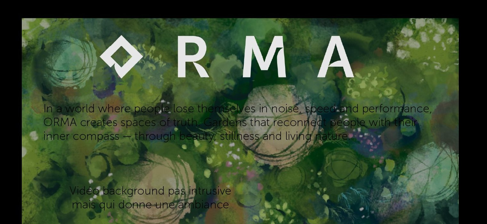

In a world where people lose themselves in noise, speed and performance, ORMA creates spaces of truth — gardens that reconnect people with their inner compass, through beauty, stillness and living nature.
Vidéo background pas intrusive
mais qui donne une ambiance